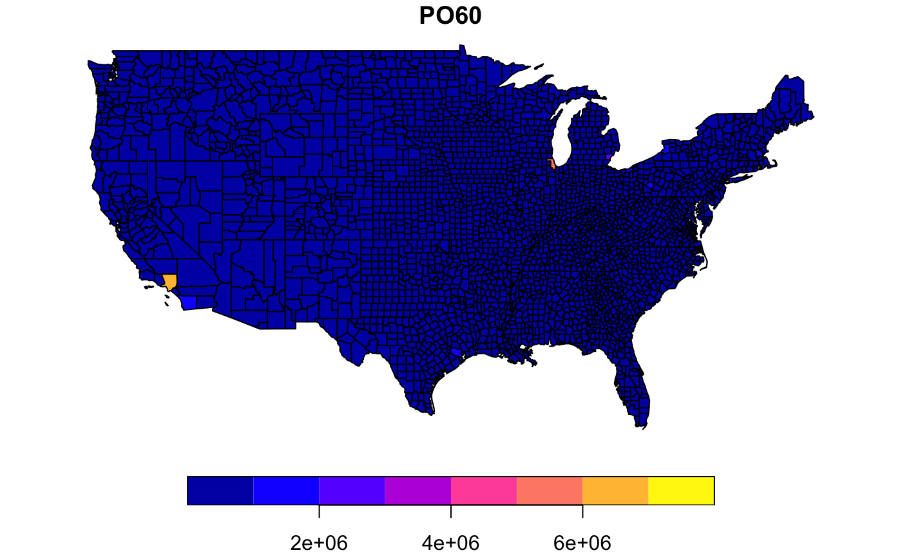

Homicides and selected socio-economic characteristics for continental U.S. counties. Data for four decennial census years: 1960, 1970, 1980 and 1990.
ncovr
An sf data frame with 3085 rows, 69 variables, and a geometry column:
county name
state name
state fips code (character)
county fips code (character)
combined state and county fips code (character)
state fips code (numeric)
county fips code (numeric)
fips code as numeric variable
dummy variable for Southern counties (South = 1)
homicide rate per 100,000 (1960, 1970, 1980, 1990)
homicide count, three year average centered on 1960, 1970, 1980, 1990
county population, 1960, 1970, 1980, 1990
resource deprivation 1960, 1970, 1980, 1990 (principal component, see Codebook for details)
population structure 1960, 1970, 1980, 1990 (principal component, see Codebook for details)
unemployment rate 1960, 1970, 1980, 1990
divorce rate 1960, 1970, 1980, 1990 (percent males over 14 divorced)
median age 1960, 1970, 1980, 1990
log of population 1960, 1970, 1980, 1990
log of population density 1960, 1970, 1980, 1990
log of median family income 1960, 1970, 1980, 1990
percent families below poverty 1960, 1970, 1980, 1990 (see Codebook for details)
percent black 1960, 1970, 1980, 1990
Gini index of family income inequality 1960, 1970, 1980, 1990
percent female headed households 1960, 1970, 1980, 1990
MULTIPOLYGON
S. Messner, L. Anselin, D. Hawkins, G. Deane, S. Tolnay, R. Baller (2000). An Atlas of the Spatial Patterning of County-Level Homicide, 1960-1990. Pittsburgh, PA, National Consortium on Violence Research (NCOVR). https://geodacenter.github.io/data-and-lab/ncovr/
Sf object, unprojected. EPSG 4326: WGS84.
